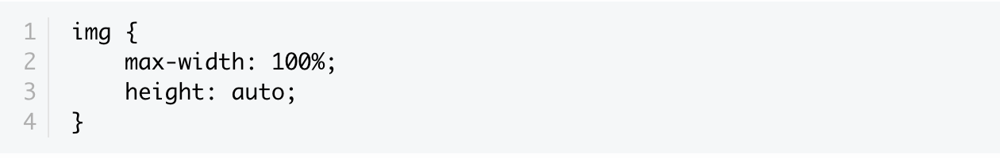
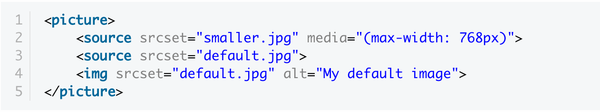
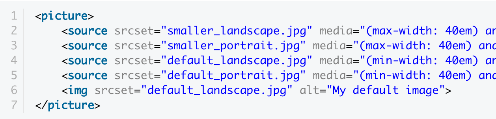
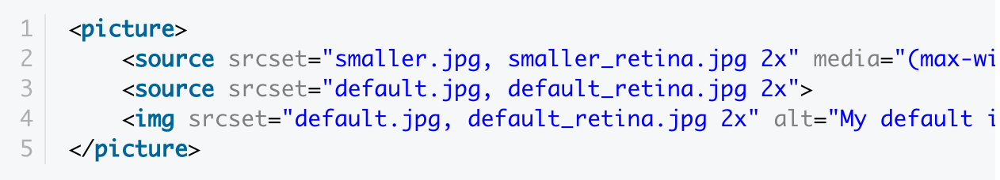

Заметка: как использовать HTML "picture" для адаптивных изображений
Вначале о проблеме
Времена попиксельного (pixel perfect) и дизайна фиксированной ширины (fixed-width) ушли в прошлое. Теперь во времена широкоформатных мониторов, интернет телевидения, планшетов и смартфонов различных размеров наши дизайны должны удовлетворять любому устройству шириной от 320px до потенциальных 7680px.
Вместе с множеством разрешений экранов приходит необходимость в сжатии или растяжении изображений для того, чтобы соответствовать различным требованиям. Это может оказаться проблей, т.к. за исключением векторной графики, у подавляющего большинства изображений есть базовая ширина в px, которую нельзя изменить.
Так что же нам делать?
Текущее общепринятое решение
Как правило, вы найдете этот код на любом сайте с адаптивные дизайном:
Здесь используется max-width: 100%; для гарантии того, что изображение никогда не выйдет
за пределы ширины родительского контейнера. Если родительский контейнер сжимается до ширины,
меньшей чем ширина изображения - последнее сжимается вместе с контейнером. Установка height: auto;
нужна для сохранения пропорций.
Проблема решается лишь в одном ключе, позволяя нам показывать одно и то же изображение для всех случаев. Но это не дает нам возможность устанавливать разные изображения для разных ситуаций.
Как работает <picture>?
Основные шаги при работе с <picture>:
- Создайте открывающий и закрывающий теги
<picture></picture> - Внутри создайте
<source>элемент для каждого выражения, что хотите обработать. - Добавьте атрибут
media, содержащий выражения для таких вещей как высота и ширина области просмотра, ориентация и т.д. - Добавьте атрибут
srcsetс соответствующим именем файла изображения для загрузки. - Добавьте дополнительные имена файлов к атрибуту
srcset, если нужно поддерживать разную плотность пикселей, например для Retina дисплеев. - Добавьте резервный (fallback) элемент
<img>.
Вот простой пример, где для случая, когда ширина видимой области меньше 768px - загружается уменьшенное (smaller) изображение:
Можно заметить, что синтаксис, используемый в атрибуте media является таким же, как и при использовании
в CSS media queries. Вы можете использовать те же самые проверки, т.е. проверять max-width,
min-width,max-height, min-height, orientation и т.д.
Эти проверки можно использовать для того, чтобы например загружать альбомную (landscape) или книжную (portrait) версию изображения в зависимости от ориентации устройства, к тому же можно одновременно проверять размеры в этих выражениях. Например:
Этот код загружает уменьшенную альбомную (landscape) версию изображения для устройств с малым экраном и соответствующей ориентацией. И увеличенную версию того же изображения для устройств с большим экраном.
Если устройство имеет книжную (portrait) ориентацию - загружается книжная версия изображения, уменьшенная для устройств с малым и увеличенная для устройств с большим экраном.
Если вы хотите предоставлять изображения в другом разрешении для дисплеев с повышенной плотностью пикселей, это можно сделать, указав дополнительные имена файлов в атрибуте srcset. Давайте к примеру посмотрим на наш первый кусок кода с добавлением обработки для Retina 2x дисплеев:
Т.к. сначала обрабатывается media query, вы можете управлять размерами изображения, с которыми оно будет показано на экране. Затем будет проверяться плотность пикселей: если дисплей поддерживает повышенную плотность и в пользовательских настройках есть на это разрешение - будут загружены соответствующие версии изображений.
Плюсы
- Загружать изображения с высоким разрешением для дисплеев с повышенной плотностью пикселей.
- Загружать по-разному ориентированные изображения в разных пропорциях для того, чтобы соответствовать изменениям в макете при разных ширинах.
- Загружать файлы изображений соответствующего размера, эффективно используя пропускную способность.
Минусы
- Не поддерживается Safari браузером.
- Возможны дополнительные HTTP-запросы